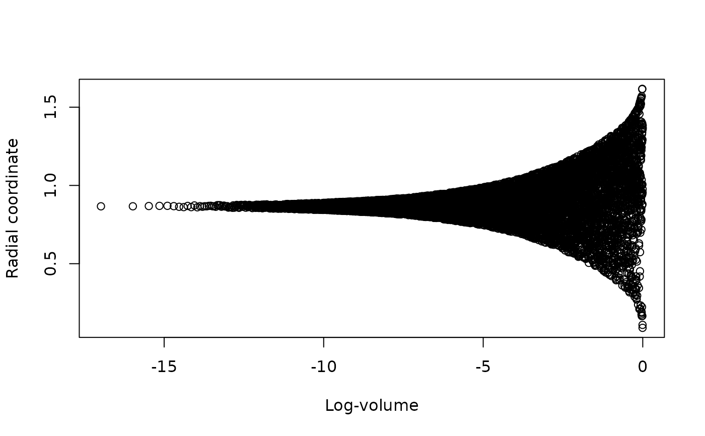

Convert an ernest_run to a format supported by the posterior package.
Usage
# S3 method for class 'ernest_run'
as_draws(x, ..., units = c("original", "unit_cube"), radial = FALSE)
# S3 method for class 'ernest_run'
as_draws_matrix(x, ..., units = c("original", "unit_cube"), radial = FALSE)
# S3 method for class 'ernest_run'
as_draws_rvars(x, ..., units = c("original", "unit_cube"), radial = FALSE)Arguments
- x
An ernest_run object.
- ...
These dots are for future extensions and must be empty.
- units
Case-sensitive string. The scale for the sampled points:
"original": Points are on the scale of the prior space."unit_cube": Points are on the (0, 1) unit hypercube scale.
- radial
Logical. If
TRUE, returns an additional column.radialcontaining the radial coordinate (i.e., the Euclidean norm) for each sampled point.
Value
A draws object containing posterior samples from the nested sampling run, with importance weights (in log units).
The returned object type depends on the function used:
For
as_drawsandas_draws_matrix, aposterior::draws_matrix()object (classc("draws_matrix", "draws", "matrix")).For
as_draws_rvars, aposterior::draws_rvars()object (classc("draws_rvars", "draws", "list")).
See also
posterior::as_draws()for details on thedrawsobject.posterior::resample_draws()uses the log weights from ernest's output to produce a weighted posterior sample.
Examples
# Load example run
library(posterior)
#> This is posterior version 1.6.1
#>
#> Attaching package: ‘posterior’
#> The following objects are masked from ‘package:stats’:
#>
#> mad, sd, var
#> The following objects are masked from ‘package:base’:
#>
#> %in%, match
data(example_run)
# View importance weights
dm <- as_draws(example_run)
weights(dm) |> head()
#> [1] 1.246803e-63 5.418871e-61 5.769832e-59 1.153845e-58 8.313380e-58
#> [6] 2.476344e-56
# Summarise points after resampling
dm |>
resample_draws() |>
summarize_draws()
#> # A tibble: 3 × 10
#> variable mean median sd mad q5 q95 rhat ess_bulk ess_tail
#> <chr> <dbl> <dbl> <dbl> <dbl> <dbl> <dbl> <dbl> <dbl> <dbl>
#> 1 x 0.00173 0.0183 0.970 0.955 -1.61 1.59 1.18 4286. 13.2
#> 2 y -0.00980 -0.0206 0.966 0.971 -1.60 1.56 1.19 4411. 12.7
#> 3 z 0.0126 -0.000932 0.967 0.975 -1.56 1.58 1.20 4107. 12.7
# View the radial coordinate in unit space over the run
dm_rad <- as_draws_rvars(
example_run,
units = "unit_cube",
radial = TRUE
)
plot(
x = example_run$log_volume,
y = draws_of(dm_rad$.radial),
xlab = "Log-volume",
ylab = "Radial coordinate"
)
